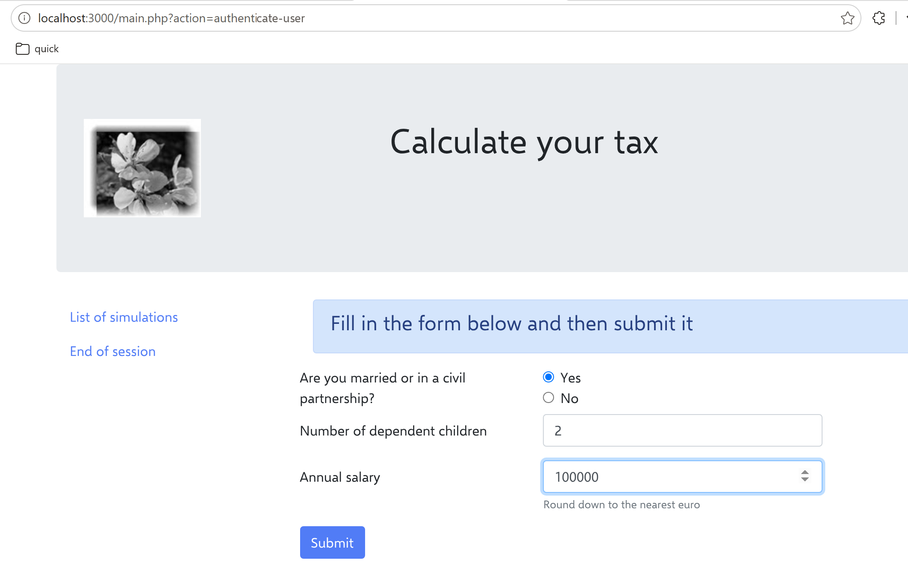

9. 案例研究：NestJS 中的税额计算服务器

9.1. 需求回顾
要移植的服务器是一个所得税计算服务器（PHP）（参见 通过示例介绍 PHP7 语言），采用分层架构（Config / Entities / Model-DAO-Business / Controllers / Responses / Views），带有一个前端控制器（main.php），它根据动作把传入的请求——所有请求都采用 URL 形式（main.php?action=...）——路由到相应的控制器。移植的目标是在 NestJS 中原样保留这种 MVC 架构，逐个动作、逐个状态码地保留，从而使其仍然与已经为 PHP 服务器编写的 HTML/TypeScript 客户端兼容。
9.2. MVC 架构得以沿用
两个服务器之间的对应关系是直接的：
- Config/config.json ↔ ConfigService；
- Entities/*.php ↔ entities/*.entity.ts （TaxAdminData、Simulation）；
- Model/ServerDao*.php ↔ ServerDaoService （[DAO] 层，第 5 章）；
- Model/ServerBusiness.php ↔ ServerBusinessService（[business] 层，逐行对应）；
- Controllers/*Controller.php （每个动作一个）↔ 每个 TypeScript 类对应一个动作控制器，由注册表动态选择（ActionsRegistryService）；
- Responses/*Response.php ↔ ResponseSenderService （jSON、XML）和 HtmlViewRendererService（HTML）；
- Views/*.php ↔ EJS 模板（views/*.ejs），采用相同的 Bootstrap 布局。
注意：此服务器上的所有动作都经过同一个路由，即 http://localhost:3000/main.php；所请求动作的名称始终作为查询字符串参数 ?action=action-name提供——绝不出现在 URL 路径中。这是一种刻意的 URL 设计，与前几章的示例（动作 [/a01]、[/m01]……按路径片段路由）不同，这里完全保持原 PHP 服务器上的样子，以便与已经编写好的客户端保持兼容。
9.3. 项目文件结构
在详细介绍每一层之前，下面是 nestjs-case-study 项目的完整目录结构，即在运行 npm install 之后的样子（dist/ 文件夹由 npm run build 生成，它和 node\_modules/ 目录 均未显示）：
| nestjs-case-study/
+-- .env.example
+-- .gitignore
+-- README.md
+-- create_dbtaxes.sql
+-- nest-cli.json
+-- package.json
+-- tsconfig.json
+-- tsconfig.build.json
+-- data/
| +-- tax-admin-data.json
+-- Logs/
+-- public/
| +-- Resources/
| +-- logo.jpg
+-- views/
| +-- view-authentication.ejs
| +-- view-tax-calculation.ejs
| +-- view-simulations-list.ejs
| +-- view-errors.ejs
| +-- partials/
| +-- banner.ejs
| +-- menu.ejs
| +-- authentication-form.ejs
| +-- tax-calculation-form.ejs
| +-- simulations-list-table.ejs
+-- src/
+-- main.ts
+-- app.module.ts
+-- main.controller.ts
+-- config/
| +-- config.service.ts
+-- entities/
| +-- simulation.entity.ts
| +-- tax-admin-data.entity.ts
| +-- tax-exception.ts
+-- model/
| +-- server-dao.interface.ts
| +-- server-dao.service.ts
| +-- server-business.service.ts
+-- actions/
| +-- action-controller.interface.ts
| +-- actions-registry.service.ts
| +-- init-session.controller.ts
| +-- authenticate-user.controller.ts
| +-- calculate-tax.controller.ts
| +-- display-tax-calculation.controller.ts
| +-- list-simulations.controller.ts
| +-- delete-simulation.controller.ts
| +-- end-session.controller.ts
| +-- admin-data.controller.ts
+-- responses/
| +-- response-sender.service.ts
+-- views/
| +-- view-models.ts
| +-- html-view-renderer.service.ts
+-- session/
| +-- session.types.ts
+-- utilities/
| +-- logger.service.ts
+-- filters/ (reserved, currently empty)
|
各元素的作用：
- .env / .env.example —— 环境变量（端口、会话密钥、MySQL 及 TAX_DATA_SOURCE 参数等），由 ConfigService 读取；.env 不纳入版本控制（.gitignore）；.env.example 用作要复制的模板（cp .env.example .env）；
- .gitignore —— 排除 node_modules/、dist/、.env、以及仓库中的日志；
- README.md —— 项目文档（安装、PHP 与 NestJS 之间的对应关系、带注释的目录结构）：本章对其内容进行了总结和扩展；
- create_dbtaxes.sql —— 创建 MySQL dbtaxes-2019 数据库的脚本（表 tbbrackets、tbconstants……，仅在 TAX_DATA_SOURCE=mysql 时使用）；
- nest-cli.json、tsconfig.json、tsconfig.build.json —— CLI、NestJS 和 TypeScript 编译器的配置，前几章已经讨论过；
- package.json —— 依赖（ejs、express-session、mysql2、js2xmlparser、dotenv……）和 npm 脚本（start、start:dev、build）；
- data/tax-admin-data.json —— 备用税务数据集，在 TAX_DATA_SOURCE=json 时使用：测试服务器无需安装 MySQL；
- Logs/ —— 应用日志目录（logs.txt），由 LoggerService 写入；如果启动时尚不存在，则会自动创建；
- public/Resources/logo.jpg —— 静态图片，由 app.useStaticAssets(...) 在 main.ts 中原样提供，用于 HTML 视图中的横幅；
- views/ （位于项目根目录）—— EJS 模板及其局部模板，详见下文的“构建 HTML 页面”；
- src/main.ts —— 入口点：启动 NestJS 服务器（见下文）；
- src/app.module.ts —— 根模块：将 MainController 声明为唯一的控制器，并声明应用的所有提供者；
- src/main.controller.ts —— 前端控制器，上文已经描述；
- src/config/ —— 应用配置（ConfigService），详见下文；
- src/entities/ —— 数据类（Simulation、TaxAdminData、TaxException），详见下文；
- src/model/ —— [DAO] 层和 [business] 层；
- src/actions/ —— 每个动作一个控制器、公共接口 ActionController、以及注册表 ActionsRegistryService；
- src/responses/ —— 响应生成（jSON/XML）和 CORS 处理（ResponseSenderService）；
- src/views/ —— 注意：不要把它与 根目录中的
views/ 目录混淆。此文件夹只包含 TypeScript，即显示模板的构造（view-models.ts）以及视图（EJS）的选择/渲染（html-view-renderer.service.ts）；
- src/session/ —— Express 会话的 TypeScript 类型定义（session.types.ts）；
- src/utilities/ —— 日志记录（LoggerService）；
- src/filters/ —— 预留目录，目前为空：在此版本的项目中尚未使用。
有两个文件值得进一步说明：src/main.ts 和 src/app.module.ts，它们都是本项目特有的（超出前几章已经介绍过的框架内容）。摘自 src/main.ts：
| async function bootstrap() {
const app = await NestFactory.create<NestExpressApplication>(AppModule);
app.useStaticAssets(join(process.cwd(), 'public'));
app.use(
session({
secret: process.env.SESSION_SECRET ?? 'change-me-in-production',
resave: false,
saveUninitialized: false,
cookie: { httpOnly: true, sameSite: 'lax', secure: false, path: '/' },
}),
);
const port = Number(process.env.PORT ?? 3000);
await app.listen(port);
}
|
我们来解读这段代码：
- 第 4 行：app.useStaticAssets(join(process.cwd(), 'public')); —— 通过静态路由原样提供 public/ 文件夹中的文件（这里是 public/Resources/logo.jpg），而不经过 NestJS 控制器；
- 第 6 行：app.use(session({...})); —— 直接在 NestJS 应用上安装 express-session 中间件：app.use(...) 在这里的工作方式与普通 Express 应用完全相同，因为 NestJS 构建在 Express 之上——这正是 request.session 在 MainController 和每个动作控制器中有意义的原因；
- 第 13 行：const port = Number(process.env.PORT ?? 3000); —— 监听端口与其余可配置的设置一样，来自环境变量（位于 .env 文件中），默认值为 3000 。
src/app.module.ts 是根模块（前几章已经遇到过）：它将 MainController 声明为唯一的控制器，并在其 providers 数组中列出应用的所有提供者——这些服务（ConfigService、LoggerService、ServerDaoService、ServerBusinessService、ResponseSenderService、HtmlViewRendererService、ActionsRegistryService）和八个动作控制器，它们都可以通过这同一个依赖注入机制相互注入。
9.4. 前端控制器
一个单独的控制器（NestJS 中的 MainController）接收所有发往 /main.php?action=...（@All('main.php')）的请求：它获取 action 参数，检查所有动作共有的前置条件（动作已知、会话已初始化、用户已通过身份验证），然后委托给相应动作的控制器。
摘自 src/main.controller.ts：
| @Controller()
export class MainController {
constructor(
private readonly configService: ConfigService,
private readonly responseSender: ResponseSenderService,
private readonly actionsRegistry: ActionsRegistryService,
) {}
@All('main.php')
async handle(@Req() request: Request, @Res() response: Response): Promise<void> {
const action = String(request.query.action ?? '').toLowerCase();
if (!this.actionsRegistry.has(action)) {
// ……状态 102：无效的动作
}
if (!request.session.type && action !== 'init-session') {
// ……状态 103：没有正在进行的会话
}
if (!request.session.user && action !== 'authenticate-user' && action !== 'init-session') {
// ……状态 104：用户未通过身份验证
}
const controller = this.actionsRegistry.get(action);
const result = await controller.execute(config, request, request.session);
// ……构建并发送响应（§6.7）
}
}
|
我们来解读这段代码：
- 第 1 行：[@Controller()] —— 此装饰器将该类标记为 NestJS 控制器 -- 这里不带参数使用，它不设置任何公共前缀：确切的前缀由下面方法本身上指定的路由来决定；
- 第 3 行：[constructor(...)] —— 通过构造函数注入三个 @Injectable() 提供者：配置服务、响应发送服务和动作注册表 -- NestJS 会自动实例化并提供它们，无需在任何地方编写
new ConfigService() ；
- 第 9 行：[@All('main.php')] ——
@All 是一个路由装饰器，它将其后的方法与给定 URL 的所有 HTTP 方法（GET、POST、PUT、DELETE……）关联起来——这里的 URL 是 /main.php（这个沿用自 PHP 服务器的名称，在 NestJS 中仅表示 URL 路径，而不是实际被执行的 PHP 文件）；正是这一点使得同一个控制器只需声明一个路由，就能同时处理读取类动作（GET，例如 init-session）和提交数据的动作（POST，例如 calculate-tax）；
- 第 10 行：[@Req() request: Request, @Res() response: Response] —— 两个我们已经见过的参数装饰器：@Req() 注入完整的请求对象（HTTP 方法、请求头、query、body、会话等），而 @Res() 注入 Express 响应对象，从而完全控制返回的内容——这里之所以必要，是因为该控制器必须根据情况自行选择 HTTP 状态码和响应格式（jSON、XML 或 HTML），而简单的
return 语句无法做到如此精确；
- 第 11 行：[const action = String(request.query.action ?? '').toLowerCase();] ——
action 参数是从 手动读取自 request.query 的——因为我们选择了 @Req() ，而不是上一章中见过的 @Query('action') 装饰器，所以代码必须自己从请求对象中获取该值；
- 第 21 行：[const controller = this.actionsRegistry.get(action);] —— 在前置条件验证通过后，MainController 并不亲自处理该动作：它根据动作名称找到对应的动作控制器（见下一节），并将工作委托给它。
注意：此控制器使用 @Req() 和 @Res() ，而不是上一章中的各个单独装饰器（@Query()、@Body()等）：它需要完整访问请求（方法、所有参数），并完全控制所发送的响应（状态码和格式的选择）——这与 main.php 借助 Symfony 的 Request 和 Response 对象所做的完全一样。
9.5. 动作控制器
每个动作都有自己的控制器，这些控制器实现一个公共接口 ActionController——它是 PHP 中 InterfaceController 接口的 TypeScript 对应物。下面是 [calculate-tax] 动作控制器的简化版本：
摘自 src/actions/calculate-tax.controller.ts：
| @Injectable()
export class CalculateTaxController implements ActionController {
constructor(
private readonly dao: ServerDaoService,
private readonly business: ServerBusinessService,
) {}
async execute(config, request, session): Promise<ActionResult> {
// ……验证提交的参数 [married, children, salary]
// （与原 PHP 控制器相同的数字状态码）
const taxAdminData = await this.dao.getTaxAdminData();
const result = this.business.calculateTax(married, children, salary, taxAdminData);
const simulations = session.simulations ?? [];
simulations.push(Simulation.fromAttributes({ married, children, salary, ...result }));
session.simulations = simulations;
return { statusCode: 200, status: 300, content: { response: result }, headers: {} };
}
}
|
我们来拆解这段代码：
- 第 1 行：[@Injectable()] —— 这里要注意的第一个重要点：CalculateTaxController 是一个普通的提供者（@Injectable()），而不是NestJS 控制器——它既没有 @Controller() 也没有任何路由（@Get、@Post……）；只有 MainController （见上文）才会被 NestJS 的 HTTP 路由器识别；
- 第 2 行：[export class CalculateTaxController implements ActionController] —— 该类实现了项目自定义的接口 ActionController （定义于 action-controller.interface.ts），该接口只要求一个方法：execute(...) -- 这是项目约定，而不是 NestJS 的机制；
- 第 3 行：[constructor(...)] —— 通过构造函数注入两个服务：DAO （[DAO] 层，访问税务数据）和业务逻辑 （[business] 层，纯计算）；
- 第 8 行：[async execute(config, request, session): Promise<ActionResult>] —— 由 MainController.handle() （controller.execute(...)，见上文）调用的方法 -- 它的参数不是 NestJS 装饰器（@Body()、@Session()等），因为这个方法从不由 HTTP 路由器直接调用：MainController 已经手动把它通过 @Req() 自己接收到的请求和会话传给了它；
- 第 12 行：[const taxAdminData = await this.dao.getTaxAdminData();] —— 通过上一章介绍的 [DAO] 层，获取计算所需的税务数据（税率档次、阈值）；
- 第 19 行：[return { statusCode: 200, status: 300, content: { response: result }, headers: {} };] —— 第二个重要点：
execute() 返回的内容并不会原样发送给浏览器——它是项目自定义的结构 ActionResult（statusCode、status、content、headers），由 MainController 解析，然后传给 ResponseSenderService，由后者构造实际发送的 HTTP 响应（根据会话类型为 jSON、XML 或 HTML——见下文）。
此动作由向 http://localhost:3000/main.php?action=calculate-tax 发出的 POST 请求触发，三个参数“married”、“children”和 “salary” 包含在请求体中（而不在 URL 中）——事实上，这正是 execute() 检查的第一件事，甚至先于读取这些参数。
9.6. 其他动作控制器
每个动作都有自己的控制器，它们都实现同一个接口（PHP 中 InterfaceController 接口的 TypeScript 对应物）——摘自 src/actions/action-controller.interface.ts：
| export interface ActionResult {
statusCode: number;
status: number;
content: Record<string, unknown>;
headers: Record<string, string>;
}
export interface ActionController {
execute(config: AppConfig, request: Request, session: AppSession): Promise<ActionResult>;
}
|
并且都通过一个注册表按其动作名称进行标识，该注册表本身由构造函数注入到 MainController 中——摘自 src/actions/actions-registry.service.ts：
| constructor(
initSession: InitSessionController,
authenticateUser: AuthenticateUserController,
calculateTax: CalculateTaxController,
listSimulations: ListSimulationsController,
deleteSimulation: DeleteSimulationController,
endSession: EndSessionController,
displayTaxCalculation: DisplayTaxCalculationController,
adminData: AdminDataController,
) {
this.registry = {
'init-session': initSession,
'authenticate-user': authenticateUser,
'calculate-tax': calculateTax,
'list-simulations': listSimulations,
'delete-simulation': deleteSimulation,
'end-session': endSession,
'display-tax-calculation': displayTaxCalculation,
'get-admindata': adminData,
};
}
|
我们来拆解这段代码：
- NestJS 实例化八个动作控制器中的每一个（借助 @Injectable()），并把它们全部以构造完成的状态传给 ActionsRegistryService 的构造函数——后者只是把它们存储在一个以动作名称为索引的关联数组中；
- 这个表（this.registry）的作用与 PHP 端 [actions] 在 Config/config.json 中的表完全相同，但无需手动实例化任何东西：has(action) 和 get(action) 是 MainController 唯一使用的两个方法。
[calculate-tax] 动作已在上文中详细描述。以下是其他七个动作控制器各自的特点：
- init-session.controller.ts —— 初始化会话的响应类型（session.type = json、html、或 xml）；必须是第一个被调用的动作（它是唯一被 MainController 豁免“当前无会话”检查的动作）；要求使用 GET 方法，且请求参数恰好为两个（action、type）；
- authenticate-user.controller.ts —— 将提交的 登录名/密码 组合与 config.users 中的列表进行核对；通过累加错误位来构造其状态码（status += 2 表示 用户名 缺失，status += 4 表示 密码 缺失）——与原 PHP 验证器的数值逻辑相同；
- list-simulations.controller.ts —— 其中最简单的一个：返回 session.simulations ?? []，不做任何计算；
- delete-simulation.controller.ts —— 执行一系列检查（方法/参数个数、“number” 参数是否存在、数字语法、索引是否在数组范围内），每成功一步就逐位累加状态码，然后调用 simulations.splice(number, 1) 并将数组重新保存到会话中；
- display-tax-calculation.controller.ts —— 比 list-simulations 还要简短：除了返回状态码 800外什么也不做，这样客户端无需任何服务器端处理，就能直接切换到另一个视图（返回计算表单）；
- admin-data.controller.ts —— 直接委托给 ServerDaoService.getTaxAdminData() 并拦截 TaxException 以返回错误状态 1041；与
calculate-tax 一起，它是仅有的两个在构造函数中注入 [DAO] 层的动作控制器；
src/actions/end-session.controller.ts 的情况因一个经典的 Express-Session 陷阱而值得更仔细地研究：
| async execute(config: AppConfig, request: Request, session: AppSession): Promise<ActionResult> {
const method = request.method.toLowerCase();
const nbParams = Object.keys(request.query).length;
if (method !== 'get' || nbParams !== 1) {
return {
statusCode: 400,
status: 401,
content: { response: "GET required with the single parameter [action] in the URL" },
headers: {},
};
}
const type = session.type;
await new Promise<void>((resolve) => session.regenerate(() => resolve()));
request.session.type = type;
return {
statusCode: 200,
status: 400,
content: { response: 'session deleted' },
headers: {},
};
}
|
我们来解读这段代码：
- 第 9 行：const type = session.type; —— 我们在销毁会话之前先保存响应类型（json/html/xml），因为需要在新会话中恢复它；
- 第 10 行：await new Promise<void>((resolve) => session.regenerate(() => resolve())); —— 该控制器中一个棘手的地方：session.regenerate(callback) 由 express-session 提供，是一个回调式方法，而不是 Promise；因此我们把它包装在一个 Promise 中，以便像其余代码一样对它使用 await；
regenerate() 会清除当前会话并为其分配一个全新的标识符（相当于 Symfony 中的会话销毁）；
- 第 11 行：request.session.type = type; —— 第二个棘手的点：在
regenerate() 之后，request.session 指向一个全新的会话实例；在调用会话之前，旧的引用已被捕获到 execute() 参数中，现在已成为孤立引用——这就是为什么要把类型重新赋给 request.session 而不是 session；否则它会悄无声息地丢失。
9.7. [DAO] 层
ServerDaoService（§5.1）向业务层提供税务数据（税率档次、阈值），数据来源取决于某个配置参数，可以是 jSON 文件（便于在没有数据库的情况下测试），也可以是使用 mysql2 访问的 MySQL。
摘自 src/model/server-dao.interface.ts——一份最小契约，即 [DAO] 层的每个实现都必须提供的唯一方法：
| export interface IServerDao {
getTaxAdminData(): Promise<TaxAdminData>;
}
|
摘自 src/model/server-dao.service.ts，这是本项目中该契约的唯一实现：
| @Injectable()
export class ServerDaoService implements IServerDao {
constructor(private readonly configService: ConfigService) {}
async getTaxAdminData(): Promise<TaxAdminData> {
const { taxDataSource } = this.configService.config;
if (taxDataSource === 'mysql') {
return this.getTaxAdminDataFromMysql();
}
return this.getTaxAdminDataFromJson();
}
private async getTaxAdminDataFromJson(): Promise<TaxAdminData> {
const { jsonTaxDataFile } = this.configService.config;
try {
const fileContents = fs.readFileSync(jsonTaxDataFile, 'utf-8');
const attributes = JSON.parse(fileContents);
return TaxAdminData.fromAttributes(attributes);
} catch (ex) {
throw new TaxException(
`The tax data file [${jsonTaxDataFile}] could not be processed: ${(ex as Error).message}`,
);
}
}
private async getTaxAdminDataFromMysql(): Promise<TaxAdminData> {
const { mysql: dbConfig } = this.configService.config;
let connection: mysql.Connection | null = null;
try {
connection = await mysql.createConnection({
host: dbConfig.host,
port: dbConfig.port,
database: dbConfig.database,
user: dbConfig.user,
password: dbConfig.password,
});
// 税率档次（表 tbbrackets）
const [brackets] = await connection.query<RowDataPacket[]>(
'select limits, coeffR, coeffN from tbbrackets order by id',
);
const limits = brackets.map((row) => Number(row.limits));
const coeffR = brackets.map((row) => Number(row.coeffR));
const coeffN = brackets.map((row) => Number(row.coeffN));
// 计算常量（表 tbconstants）
const [constantsRows] = await connection.query<RowDataPacket[]>(
'select halfShareQfCeiling, ... from tbconstants limit 1',
);
const row = constantsRows[0];
return TaxAdminData.fromAttributes({
limits, coeffR, coeffN,
halfShareQfCeiling: Number(row.halfShareQfCeiling),
// ……其余八个常量也进行相同的 Number(...) 转换
// （完整列表参见源文件）
});
} catch (ex) {
throw new TaxException(`[mysql] ${(ex as Error).message}`);
} finally {
if (connection) {
await connection.end();
}
}
}
}
|
我们来解读这段代码：
- async getTaxAdminData(): Promise<TaxAdminData> { if (taxDataSource === 'mysql') ... } —— 决策过程只需一行：根据 config.taxDataSource （读取自环境变量 TAX_DATA_SOURCE），数据从 jSON 文件或 MySQL 中获取，但暴露给应用其余部分的契约（IServerDao）保持不变——CalculateTaxController 和 AdminDataController 并不知道实际使用的是哪个数据源；
- getTaxAdminDataFromJson() —— 同步读取并解析 data/tax-admin-data.json （fs.readFileSync）；任何错误（文件缺失、jSON 无效）都会被拦截，并以带有明确消息的 TaxException 形式记录下来——绝不会是原始的 Node 异常，因为那种异常无法被正确地传播回客户端；
- getTaxAdminDataFromMysql() —— 使用 每次调用时都打开 一个 MySQL 连接，借助 mysql2/promise （不复用连接池：与 README 中提到的没有 Redis 缓存一致，每次查询都会重新检查所有内容）；执行两条 SQL 查询（税率档次，然后是常量），根据检索到的行重建一个 TaxAdminData ，并且无论读取是否成功，都会在
finally 块中系统地关闭连接；
- 两个私有方法返回相同的类型（Promise<TaxAdminData>），这使得 getTaxAdminData() 可以保持为一个简单的外观，自身不含任何业务逻辑。
9.8. [business] 层
ServerBusinessService 不了解 HTTP、会话或数据库：它是 PHP 服务器中税额计算的逐行移植，纯粹且可独立于其余部分进行测试。
摘自 src/model/server-business.service.ts：
| @Injectable()
export class ServerBusinessService {
calculateTax(
married: string,
children: number,
salary: number,
taxAdminData: TaxAdminData,
): TaxCalculationResult {
// ……与 Model/ServerBusiness.php 相同的算法：家庭商数、
// 封顶、减税、减免
}
private getTaxableIncome(salary: number, taxAdminData: TaxAdminData): number {
let allowance = 0.1 * salary;
if (allowance > taxAdminData.tenPercentAllowanceMax) {
allowance = taxAdminData.tenPercentAllowanceMax;
}
if (allowance < taxAdminData.tenPercentAllowanceMin) {
allowance = taxAdminData.tenPercentAllowanceMin;
}
return Math.floor(salary - allowance);
}
}
|
- 第 1 行：[@Injectable()] —— 又是同一个装饰器，原因与本章其他地方相同：没有它，NestJS 就无法实例化 ServerBusinessService ，也无法将其注入到上面的 CalculateTaxController 中；
- 第 2 行：[export class ServerBusinessService {] —— 从这里开始，除了第一个装饰器之外，代码不再特定于 NestJS：calculateTax(...) 和 getTaxableIncome(...) 都是标准的 TypeScript 代码——对 PHP 算法的逐行移植，不涉及 HTTP 或数据库。
9.9. 应用程序配置
src/config/config.service.ts 把原先在 PHP 端分散于 Config/config.json 和 Config/database.json 中的内容合并到了单个 NestJS 服务中——但有一个预期的差别：敏感配置（密码、会话密钥）现在来自环境变量（.env 文件），而不是纳入版本控制的 jSON 文件：
| @Injectable()
export class ConfigService {
readonly config: AppConfig;
constructor() {
this.config = {
corsAllowed: (process.env.CORS_ALLOWED ?? 'true') !== 'false',
actions: {
'init-session': 'InitSessionController',
// ……每个动作一个条目（参见 actions-registry.service.ts），
// 仅为文档目的而保留
},
types: ['json', 'html', 'xml'],
users: [{ login: 'admin', passwd: 'admin' }],
taxDataSource: (process.env.TAX_DATA_SOURCE as 'json' | 'mysql') ?? 'json',
jsonTaxDataFile: path.join(process.cwd(), 'data', 'tax-admin-data.json'),
mysql: {
host: process.env.DB_HOST ?? 'localhost',
port: Number(process.env.DB_PORT ?? 3306),
database: process.env.DB_NAME ?? 'dbtaxes-2019',
user: process.env.DB_USER ?? 'admtaxes',
password: process.env.DB_PASSWORD ?? 'pwdtaxes',
},
logsFilename: path.join(process.cwd(), 'Logs', 'logs.txt'),
sessionSecret: process.env.SESSION_SECRET ?? 'change-me-in-production',
views: {
'view-authentication': [700, 221, 400],
'view-tax-calculation': [200, 300, 341, 350, 800],
'view-simulations-list': [500, 600],
},
errorsView: 'view-errors',
viewsDir: path.join(process.cwd(), 'views'),
};
const logsDir = path.dirname(this.config.logsFilename);
if (!fs.existsSync(logsDir)) {
fs.mkdirSync(logsDir, { recursive: true });
}
}
}
|
我们来解读这段代码：
- actions: { ... } —— 保留此表纯粹是为了文档目的（它准确地描述了原始架构）：动作的实际路由并不依赖它，而是通过 ActionsRegistryService 中的依赖注入来处理；
- taxDataSource: (process.env.TAX_DATA_SOURCE as ...) ?? 'json' —— 读取自环境变量 TAX_DATA_SOURCE，该字段选择 ServerDaoService 所使用的税务数据源（见上文）；
- views: { ... } —— 将每个 EJS 模板名称与应显示它的响应状态列表关联起来（例如，view-tax-calculation 对应状态 200， 300、341、350、800）；HtmlViewRendererService （见“构建 HTML 页面”）使用此表来选择要渲染的视图；
- errorsView: 'view-errors' —— 回退视图，当没有任何 views 条目与当前状态匹配时显示；
- 最后一行：if (!fs.existsSync(logsDir)) { fs.mkdirSync(logsDir, { recursive: true }); } —— 创建时，该服务自身会在 Logs/ 文件夹尚不存在时创建它，这样 LoggerService 就可以随时向其中写入，而无需为此操心。
9.10. 实体、会话和日志
src/entities/ 包含三个数据类，移植自 Entities/*.php。摘自 simulation.entity.ts——一次税额计算模拟，存储在 session.simulations 中：
| export class Simulation {
married: string;
children: number;
salary: number;
tax: number;
surcharge: number;
discount: number;
reduction: number;
rate: number;
static fromAttributes(attributes: Partial<Simulation>): Simulation {
const simulation = new Simulation();
Object.assign(simulation, attributes);
return simulation;
}
}
|
摘自 tax-admin-data.entity.ts——由 [DAO] 层读取的税率档次和计算常量：
| export class TaxAdminData {
limits: number[] = [];
coeffR: number[] = [];
coeffN: number[] = [];
halfShareQfCeiling = 0;
// ……其余八个计算常量（参见源文件）
static fromAttributes(attributes: Partial<TaxAdminData>): TaxAdminData {
const entity = new TaxAdminData();
Object.assign(entity, attributes);
return entity;
}
}
|
以及 tax-exception.ts —— 一个带类型的应用异常，当数据源不可访问（jSON 文件不可读、MySQL 连接失败……）时由 [DAO] 层抛出，并由需要它的动作处理器（calculate-tax、 get-admindata）拦截：
| export class TaxException extends Error {
constructor(message: string, public readonly code: number = 0) {
super(message);
this.name = 'TaxException';
}
}
|
src/session/session.types.ts 不是服务：它是一个类型声明，用于扩展 express-session 模块，使 TypeScript 能够访问应用特有的内容（会话类型、已认证用户、已保存的模拟）：
| declare module 'express-session' {
interface SessionData {
type?: 'json' | 'html' | 'xml';
user?: boolean;
simulations?: Simulation[];
}
}
export type AppSession = Session & Partial<SessionData>;
|
注意：这项技术——模块扩展（`declare module 'express-session'`）——使得你可以在项目的其他地方编写 `request.session.simulations` 或 `session.user` ，而不会让 `TypeScript` 编译器报错；AppSession，即所有动作控制器中使用的 req.session 的实际类型，就是直接由此派生而来。
最后，src/utilities/logger.service.ts 会把服务器所做的一切（新请求、请求的动作、选中的控制器、返回的响应等）记录到 Logs/logs.txt 中：
| @Injectable()
export class LoggerService {
constructor(private readonly configService: ConfigService) {}
write(message: string): void {
const timestamp = new Date().toISOString().replace('T', ' ').replace('Z', '');
fs.appendFile(
this.configService.config.logsFilename,
`${timestamp} : ${message}\n`,
() => { /* 尽力而为的日志写入，与 PHP 端一样 */ },
);
}
}
|
注意：写入以尽力而为的模式执行（异步的 fs.appendFile，不等待也不验证结果）：写日志时出现问题绝不应导致请求失败——这正是 PHP 端 Utilities/Logger.php 所采取的做法。
9.11. jSON、XML 和 HTML 响应
ResponseSenderService 构造 jSON 或 XML 响应（使用 js2xmlparser 库），复刻原 PHP 服务器对 CORS 的处理（Access-Control-Allow-* 头仅针对 localhost 来源），并处理 OPTIONS 方法（CORS 预检）的特殊情况。
摘自 src/responses/response-sender.service.ts，它实际构造这个响应：
| async send(
request: Request, response: Response, config: AppConfig,
statusCode: number, content: Record<string, unknown>,
headers: Record<string, string>, type: 'json' | 'html' | 'xml',
): Promise<void> {
let body: string;
let contentType: string;
switch (type) {
case 'xml':
body = js2xmlparser.parse('root', content);
contentType = 'application/xml';
break;
case 'html':
body = await this.htmlViewRenderer.render(content, request);
contentType = 'text/html';
break;
case 'json':
default:
body = JSON.stringify(content);
contentType = 'application/json';
break;
}
headers = { ...headers, 'content-type': contentType };
this.sendResponse(request, response, statusCode, body, headers, config);
this.logger.write(`response=${JSON.stringify(content)}\n`);
}
private sendResponse(
request: Request, response: Response, statusCode: number,
content: string, headers: Record<string, string>, config: AppConfig,
): void {
if (config.corsAllowed) {
const origin = request.headers.origin ?? '';
if (origin.startsWith('http://localhost') || origin.startsWith('https://localhost')) {
headers = {
...headers,
'Access-Control-Allow-Origin': origin,
'Access-Control-Allow-Headers': 'Accept, Content-Type',
'Access-Control-Allow-Methods': 'GET, POST',
'Access-Control-Allow-Credentials': 'true',
};
}
}
const method = request.method.toLowerCase();
if (method === 'options') {
content = '';
statusCode = 200;
}
Object.entries(headers).forEach(([name, value]) => response.setHeader(name, value));
response.status(statusCode).send(content);
}
|
我们来解读这段代码：
- switch (type) { ... } —— 三种响应格式在这里构造，而且只在这里构造：JSON 通过 JSON.stringify，XML 通过 js2xmlparser 库（它把
content 对象转换为 XML 文档，以 <root> 元素作为根），以及 HTML 则完全委托给 HtmlViewRendererService.render(...)，详见下文；
- this.logger.write(
response=${JSON.stringify(content)}); —— 即使在 HTML 模式下，记录的也是响应的应用内容 （content），而绝不是生成的整个 HTML 页面——与 HtmlResponse.php 的做法一样；
- 在 sendResponse(...) 中，检查 origin.startsWith('http://localhost') || origin.startsWith('https://localhost') 完全复刻了原 PHP 服务器的 CORS 策略（ParentResponse::sendResponse）：只有 localhost 来源才会收到 Access-Control-Allow-* 头；绝不会给任意域名；
- if (method === 'options') { content = ''; statusCode = 200; } —— CORS 预检的特殊情况：对于 OPTIONS 请求，只有响应头重要；响应体会被清空，状态码会被强制设为 200，无论所请求的处理是什么。
对于 type=html 模式，HtmlViewRendererService 复刻了 PHP 服务器的视图选择逻辑：每个响应状态对应一个视图，从配置表中选取，如果没有视图匹配，则回退到通用错误页面。每个视图都是一个 EJS 模板（views/*.ejs），是对原 PHP 文件的直接翻译，由专用函数生成的“显示模板”驱动——与 getModelForThisView(...) / PHP 视图这一对的原理相同，并额外带来对显示值的自动转义。
注意：对于在别处接触过 NestJS 的读者：此 HTML 渲染没有使用 NestJS 提供的 @Render() 装饰器来把控制器方法与视图引擎（EJS、Handlebars、Pug……）关联起来 -- 该机制要求传统的 NestJS 控制器每个视图对应一个路由，这与此服务器的单一前端控制器不兼容。因此 ejs.renderFile(...) 是在 HtmlViewRendererService 中直接手动调用的，然后生成的 HTML 通过 @Res() （见上文）以纯文本形式发送：这是使用 NestJS 渲染视图的一种完全有效的替代方案，只是不经过这个特定的装饰器。
9.12. 构建 HTML 页面
我们来仔细看看 type=html 模式，其机制分解在三个不同的文件中：视图的选择与渲染（src/views/html-view-renderer.service.ts）、每个视图专属的“显示模板”的构造（src/views/view-models.ts），以及模板本身（views/*.ejs 和 views/partials/*.ejs，位于项目根目录——不要与 src/views/ 文件夹混淆，后者只包含 TypeScript）。
摘自 src/views/html-view-renderer.service.ts：
| @Injectable()
export class HtmlViewRendererService {
constructor(private readonly configService: ConfigService) {}
async render(content: Record<string, unknown>, request: Request): Promise<string> {
const { views, errorsView, viewsDir } = this.configService.config;
const status = content['status'] as number;
const viewName = Object.keys(views).find((view) => views[view].includes(status)) ?? errorsView;
const logo = buildLogoPath(request);
let model: unknown;
switch (viewName) {
case 'view-authentication':
model = buildAuthenticationModel(status, request);
break;
case 'view-tax-calculation':
model = buildTaxCalculationModel(status, request, content);
break;
case 'view-simulations-list':
model = buildSimulationsListModel(content);
break;
case 'view-errors':
default:
model = buildErrorsModel(content);
break;
}
const templateFile = path.join(viewsDir, `${viewName}.ejs`);
return ejs.renderFile(templateFile, { model, logo }, { views: [viewsDir, path.join(viewsDir, 'partials')] });
}
}
|
我们来解读这段代码：
- const viewName = Object.keys(views).find((view) => views[view].includes(status)) ?? errorsView; —— 整个机制的关键一行：我们在 config.views 表（见上文）中查找其状态列表包含当前响应状态的视图名称；如果没有任何匹配项——包括README 中指出的情况，即没有专用视图的 成功 状态，例如 get-admindata/1000——则回退到 errorsView（view-errors），其逻辑与 PHP 端的 HtmlResponse::send() 完全相同；
- const logo = buildLogoPath(request); —— 每个请求都会根据所请求的 URL 重新计算 logo 路径（见下文的 view-models.ts ），以确保即使应用部署在子目录中该路径依然正确；
- switch (viewName) { case 'view-authentication': model = buildAuthenticationModel(...); ... } —— 选定视图后，会调用相应的模型构建函数（详见下文）；EJS 模板将显示的正是这个模型，也仅仅是这个模型；
- return ejs.renderFile(templateFile, { model, logo }, { views: [viewsDir, path.join(viewsDir, 'partials')] }); —— 对 EJS 的实际调用：ejs.renderFile(...) 读取相应的 .ejs 文件，在
model 和 logo 变量的上下文中执行它，并以字符串形式返回生成的 HTML——views 选项告诉 EJS 在哪两个目录中查找按名称包含的模板（views 文件夹及其 partials/ 子文件夹）。
src/views/view-models.ts 为每个视图定义了一个模型构建函数——相当于原 PHP 各视图中都有的函数 getModelForThisView(...) 的 TypeScript 版本（Views/view-*.php）。下面是四个函数中最简单的 buildAuthenticationModel 的节选：
| export function buildAuthenticationModel(
status: number,
request: Request,
): AuthenticationModel {
const model: AuthenticationModel = { login: '', error: false, errors: [] };
switch (status) {
case 700:
case 400:
model.login = '';
model.error = false;
break;
case 221:
model.login = String(request.body?.user ?? '');
model.error = true;
model.errors = ["Authentication failed"];
break;
}
return model;
}
|
以及最复杂的 buildTaxCalculationModel，它必须处理三种不同的情况：
| export function buildTaxCalculationModel(
status: number,
request: Request,
content: Record<string, unknown>,
): TaxCalculationModel {
const model: TaxCalculationModel = {
success: false, error: false, checkedYes: false, checkedNo: false,
children: '', salary: '', errors: [],
optionsMenu: {
'List of simulations': 'main.php?action=list-simulations',
'End of session': 'main.php?action=end-session',
},
};
switch (status) {
case 200:
case 800:
model.success = false;
model.error = false;
model.checkedNo = true;
model.checkedYes = false;
model.children = '';
model.salary = '';
break;
case 300: {
const response = content.response as Record<string, unknown>;
model.success = true;
model.error = false;
model.tax = `Tax amount: ${response.tax} euros`;
model.discount = `Discount: ${response.discount} euros`;
model.reduction = `Reduction: ${response.reduction} euros`;
model.surcharge = `Surcharge: ${response.surcharge} euros`;
model.rate = `Tax rate: ${(response.rate as number) * 100} %`;
const married = request.body?.['married'];
model.checkedYes = married === 'yes';
model.checkedNo = married !== 'yes';
model.children = String(request.body?.children ?? '');
model.salary = String(request.body?.salary ?? '');
break;
}
case 341:
case 350: {
const married = request.body?.['married'];
model.checkedYes = married === 'yes';
model.checkedNo = married !== 'yes';
model.children = String(request.body?.children ?? '');
model.salary = String(request.body?.salary ?? '');
model.success = false;
model.error = true;
model.errors = [String(content.response)];
break;
}
}
return model;
}
|
我们来解读这段代码：
- 状态码 200 和 800 （空表单、进入该视图，或从
display-tax-calculation 返回）——模型中的所有字段都被重置为空，就好像表单从未被填写过；
- 状态 300 （计算成功）—— const response = content.response as Record<string, unknown>; 获取 CalculateTaxController 返回的结果（税额、折扣、减免、附加税、税率），并构造成功横幅中显示的五个句子；表单会重新填入提交的值（request.body），以便用户在查看结果的同时核对自己的输入；
- 状态 341 和 350 （数据库或 Redis 宕机）——同样重新显示已提交的表单，但会设置 model.error = true ，并将 [DAO] 层返回的错误消息放入 model.errors；
- optionsMenu: { ... } —— 侧边菜单（属于 menu.ejs，见下文）与状态无关：无论计算结果如何，它始终存在，并且始终是相同的两个选项。
其余两个函数遵循相同的原则：
- buildSimulationsListModel(content) —— 四个函数中最短的一个：simulations: (content.response as SimulationRow[]) ?? []，再加上与 buildTaxCalculationModel 相同的侧边菜单（这次包含“税额计算”和“结束会话”）；
- buildErrorsModel(content) —— 构建通用 "view-errors" 视图所显示的消息列表；它处理一种继承自原 PHP 的非常特殊的情况：else if (response !== null && typeof response === 'object') { errors = [JSON.stringify(response)]; }，即当一个没有专用视图的 成功 状态（例如 get-admindata/1000）仍然回退到该错误视图时——原 PHP 此时会通过其 __toString() 方法显示该对象；JSON.stringify 是 TypeScript 中的等价做法。
- buildLogoPath(request) —— const root = pathname.replace(/\/[^/]*$/, ''); return
${root}/Resources/logo.jpg; ：根据当前 URL 的目录（不含脚本名）重建 logo 路径，使得即使应用部署在子目录中，横幅依然正确——直接移植自 Views/v-banner.php。
四个 views/*.ejs 模板是原 PHP 文件（Views/view-*.php）的直接翻译，采用相同的 Bootstrap 4.1.3 布局。最完整的节选是 view-tax-calculation.ejs：
| <%# equivalent of Views/view-tax-calculation.php %>
<!doctype html>
<html lang="en">
<head>
<meta charset="utf-8">
<link rel="stylesheet" href="https://stackpath.bootstrapcdn.com/bootstrap/4.1.3/css/bootstrap.min.css" ...>
<title>Tax application</title>
</head>
<body>
<div class="container">
<%- include('partials/banner', { logo: logo }) %>
<div class="row">
<div class="col-md-3">
<%- include('partials/menu', { model: model }) %>
</div>
<div class="col-md-9">
<%- include('partials/tax-calculation-form', { model: model }) %>
</div>
</div>
<% if (model.success) { %>
<div class="row">
<div class="col-md-9">
<div class="alert alert-success" role="alert">
<%= model.tax %><br>
<%= model.discount %><br>
...
</div>
</div>
</div>
<% } %>
<% if (model.error) { %>
... (same principle, alert-danger, loop over model.errors)
<% } %>
</div>
</body>
</html>
|
我们来解读这个模板：
- 第 1 行：<%# ... %> —— EJS 注释，永远不会发送到浏览器；
- <%- include('partials/banner', { logo: logo }) %> —— 包含一个局部模板，并附带我们希望显式传递给它的变量（这里是
logo）；注意：<%- %> 显示结果时不进行转义——在这里仅用于插入已由 include(...) 构造好的 HTML，绝不用于用户输入的数据；
- <% if (model.success) { %> ... <% } %> —— EJS 控制块（<% %>，不带连字符）：在渲染期间执行的 JavaScript，本身不产生任何输出；在这里，只有当 model.success 为 true 时，“结果”部分才会出现在最终的 HTML 中；
- <%= model.tax %> —— 转义显示（<%= %>，带等号）：这是用于任何可能包含用户输入的数据（计算结果、重新显示的登录名、错误消息）的形式——EJS 会自动转义特殊字符，而原 PHP 中的 <?= ?> 则不会。
其余三个视图和五个局部模板（views/partials/）遵循相同的原则：
- view-authentication.ejs —— 登录表单；包含 partials/banner 和 partials/authentication-form，然后显示列表 model.errors if model.error；
- view-simulations-list.ejs —— 包含 partials/banner、partials/menu、以及 partials/simulations-list-table；
- view-errors.ejs —— 回退视图：partials/banner、partials/menu，后面是一个简单的循环 <% model.errors.forEach(function(error) { %><li><%= error %></li><% }) %>；
- partials/banner.ejs —— logo 和 “计算您的税额” 标题，除 身份验证视图外所有视图共用，身份验证视图同样包含它们；
- partials/menu.ejs —— <% Object.keys(model.optionsMenu).forEach(function(text) { %><a href="<%= model.optionsMenu[text] %>"><%= text %></a><% }) %>：侧边菜单，完全由 optionsMenu 表控制，该表在 view-models.ts 中创建——因此添加菜单选项只需修改模型，无需改动此模板；
- partials/authentication-form.ejs —— Bootstrap 登录表单，使用 value="<%= model.login %>" 在登录失败时重新显示上次输入的登录名；
- partials/tax-calculation-form.ejs —— 计算表单；请注意 <%- model.checkedYes ? 'checked="checked"' : '' %>：这是对 有意为之且安全地使用 <%- %>，因为插入的字符串（checked="checked" 或空字符串）是在服务器端设置的，绝不会由用户输入构造而成；
- partials/simulations-list-table.ejs —— 模拟表格，model.simulations 中的每一项对应一行，每行带有一个 “删除” 链接，指向 main.php?action=delete-simulation&number=... 。
注意：与原 PHP 不同，原 PHP 通过 <?= ?> 在不转义的情况下重新注入某些值（这是一个 XSS 反射型漏洞，尤其可通过身份验证表单被利用），而本项目中的 EJS 模板对所有用户提供的数据（登录名、子女数、薪资、错误消息）一律使用 <%= %> 。本项目中少数几处使用 <%- %> 的地方，仅用于包含局部模板，或插入由固定值在服务器端构造的属性——绝不涉及用户输入：这种行为在功能上与 PHP 服务器完全相同，却不会重蹈其漏洞。
9.13. 执行
在 [nestjs-case-study] 文件夹的根目录下：
npm install
cp .env.example .env
npm run start:dev
服务器随后监听 http://localhost:3000。TypeScript 客户端使用的 jSON 模式，可通过以下方式测试：
http://localhost:3000/main.php?action=init-session&type=json
而 HTML 模式则直接在浏览器中，通过以下方式测试：
http://localhost:3000/main.php?action=init-session&type=html
在这两种情况下，同一个 action 参数决定所执行的处理（此处为 init-session，它必须是第一个被调用的操作，因为它会初始化会话），而 type 参数决定响应格式——其他操作也以同样的方式进行测试，只需更改 action 的值（例如 &action=calculate-tax，使用 POST，并提交参数 “married”、“children”和 “salary”）。
打开浏览器并请求 URL [http://localhost:3000/main.php?action=init-session&type=html]

登录凭据为 admin / admin。提交表单。

填写表单后提交：
运行若干次模拟，然后请求 [List of simulations]：

删除这两个模拟：

结束会话：